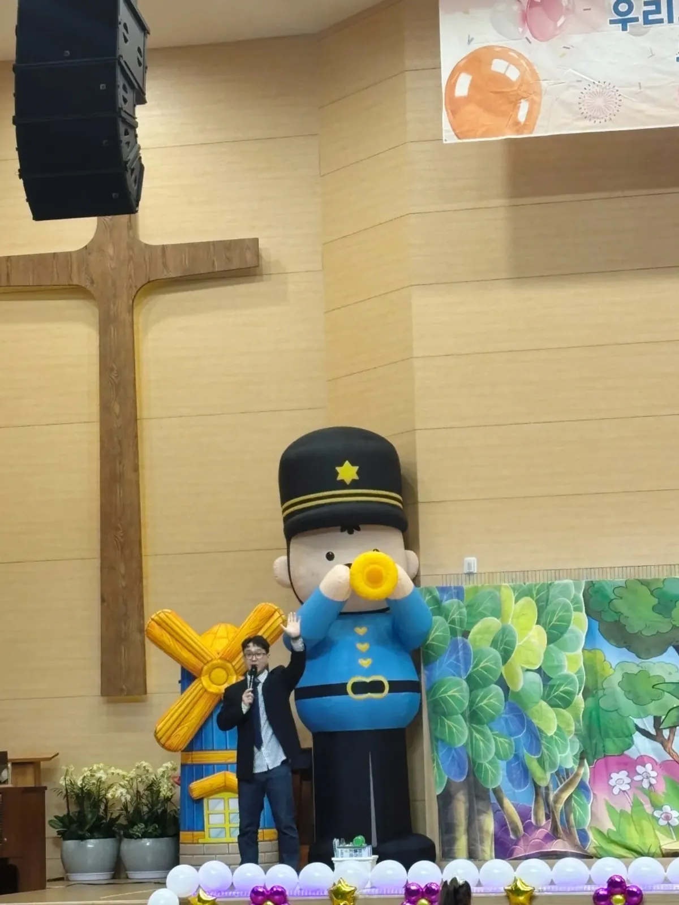

남양주 발표회 사회자를 구할 때 가장 먼저 정할 것은 사람이 아니라 식순과 대기 동선입니다. 아이들이 무대에 오르는 순서, 반이 바뀌는 사이의 시간, 부모님 촬영 안내가 정해져 있어야 사회자가 빈틈을 메울 수 있습니다. 한국체대 예그리나 사무실이 남양주시 별내면 청학리에 있어, 남양주 원은 미리 전화로 약속하고 방문 상담도 할 수 있습니다. 이 글은 재롱잔치를 앞둔 원에서 사회자와 나눌 내용을 순서대로 정리한 것입니다.

- 발표회 사회자에게는 식순표 · 반별 인원 · 무대 전환 시간 세 가지를 먼저 넘기면 준비가 빨라집니다.
- 아이가 무대에서 긴장해 멈추는 일은 흔합니다. 사회자가 이어 갈 수 있도록 반마다 대체 멘트와 박수 유도 지점을 정해 둡니다.
- 부모님 촬영 · 자리 이동 · 퇴장 안내는 시작 전에 사회자 목소리로 한 번에 하면 공연 중 소란이 줄어듭니다.
- 음향 장비와 마이크는 공연장이나 원에 있는 것을 쓰는지 미리 확인해야 합니다.
- 예그리나는 어린이집 · 유치원 · 놀이학교 발표회 사회를 맡고, 시작 전 분위기 게임과 부모님 안내까지 챙깁니다.
1. 남양주 발표회 사회자, 언제 정하면 좋을까
재롱잔치와 발표회는 연말과 학기 말에 몰립니다. 원마다 날짜가 겹치기 쉬워 사회자 일정은 공연장 대관이 정해지는 날 바로 묻는 편이 안전합니다. 공연장 대관과 사회자 일정이 서로 엇갈리면 둘 중 하나를 다시 잡아야 하기 때문입니다.
남양주(경기도 남양주시)는 지역이 넓어 원과 공연장이 떨어져 있는 경우가 있습니다(별내 · 다산 · 진접 · 오남 · 화도 · 평내호평 등). 공연장 주소가 정해지면 사회자에게 주소와 입장 가능 시간을 함께 알려 주세요. 예그리나는 남양주시 별내면 청학리 사무실에서 출발하고, 방문 상담은 미리 전화로 약속해 주시면 됩니다.
2. 사회자에게 넘길 자료 — 식순표 한 장
사회자는 무대 위에서 원과 부모님 사이를 잇는 사람입니다. 그러려면 원에서 정한 흐름을 미리 알아야 합니다. 아래 표는 발표회 식순표에 들어가면 좋은 칸입니다.
| 칸 | 적을 내용 | 사회자가 쓰는 곳 |
|---|---|---|
| 순서 · 반 이름 | 무대에 오르는 차례와 반 이름 | 소개 멘트 · 다음 순서 안내 |
| 인원 | 반별 아이 수와 담임 선생님 이름 | 박수 유도 · 이름 소개 |
| 곡 · 길이 | 곡 제목과 대략의 시간 | 전체 시간 맞추기 |
| 전환 시간 | 소품 · 의상을 바꾸는 데 걸리는 시간 | 빈 시간 채우는 멘트 · 게임 |
| 특이 사항 | 처음 무대에 서는 반, 낮잠 시간과 겹치는 반 | 긴장한 아이를 기다리는 방식 |
표를 만들 때 전환 시간을 빼먹기 쉽습니다. 반이 바뀔 때 무대가 비는 1~2분이 쌓이면 전체 공연이 늘어지고, 그 사이 객석이 산만해집니다. 사회자가 그 시간에 무엇을 할지 미리 정해 두면 흐름이 끊기지 않습니다.
3. 아이가 무대에서 멈췄을 때
어린 아이들은 조명과 객석을 보고 굳어 버리기도 합니다. 이때 음악을 멈추거나 아이를 재촉하면 더 긴장합니다. 예그리나는 아이가 긴장해 멈춰도 발표회가 이어지도록 진행하는 것을 사회의 가장 중요한 일로 봅니다.
- 반마다 「멈췄을 때 쓸 멘트」를 한 줄씩 정해 둡니다. 예) 부모님께 큰 박수를 부탁드리는 말.
- 담임 선생님이 무대 옆 어디에 서 있을지 사회자와 맞춥니다. 아이가 선생님을 보면 다시 움직이는 경우가 많습니다.
- 울음이 그치지 않는 아이는 억지로 세워 두지 않고 선생님이 데리고 내려가는 것으로 미리 합의합니다.
- 다음 순서가 바로 준비되지 않았다면 사회자가 객석과 짧은 놀이를 하며 시간을 법니다.

4. 시작 전 10분, 부모님 안내와 분위기 게임
발표회가 시작되기 전 객석은 자리 찾기와 촬영 준비로 어수선합니다. 이 시간을 그냥 두지 않고 사회자가 안내와 분위기 게임으로 채우면 첫 순서가 훨씬 매끄럽게 시작됩니다.
- 인사와 함께 공연 시간 · 순서 수를 짧게 알립니다.
- 촬영 안내 — 통로에 서지 않기, 앞사람 시야 가리지 않기 등 원에서 정한 규칙을 사회자 목소리로 전합니다.
- 휴대폰 소리 · 출입 안내를 합니다.
- 객석과 함께하는 박수 · 함성 연습 같은 짧은 분위기 게임으로 마음을 엽니다.
- 첫 반 소개로 자연스럽게 넘어갑니다.
촬영 규칙은 원마다 다릅니다. 사진 공개 범위나 촬영 금지 구역이 있다면 원에서 정해 사회자에게 넘겨 주세요. 사회자는 정해진 규칙을 전달하는 역할입니다.
5. 공연장에서 원이 확인할 것
사회자는 진행을 맡지만 공연장 설비까지 맡는 것은 아닙니다. 아래는 원 또는 공연장 담당자에게 미리 확인할 목록입니다.
| 확인할 것 | 왜 필요한가 |
|---|---|
| 음향 장비 · 무선 마이크 수 | 사회자용과 선생님용 마이크가 따로 있어야 진행이 끊기지 않습니다 |
| 음악 재생 담당 | 곡을 누가 어떤 기기로 트는지 정해야 순서가 밀리지 않습니다 |
| 대기실 · 무대 옆 공간 | 다음 반이 기다릴 자리가 있어야 전환이 빨라집니다 |
| 입장 가능 시간 | 리허설과 세팅에 쓸 시간을 계산합니다 |
| 객석 통로 | 촬영하는 부모님과 이동 동선이 겹치지 않게 합니다 |

6. 남양주 발표회 사회 문의 전에 정리할 것
아래 항목은 자동 견적서에서 골라 문의하실 수 있습니다. 자동 견적서는 금액을 바로 보여 주는 화면이 아니라, 고른 항목으로 상담을 시작하는 화면입니다. 비용은 인원 · 장소 · 프로그램에 따라 달라 상담 후 안내합니다.
| 항목 | 정리할 내용 |
|---|---|
| 발표회 · 재롱잔치 사회 | 날짜 · 공연 시간 · 반 수 · 관람 인원 |
| 에어아바타 | 무대 옆 포토존으로 캐릭터 인형을 둘지 |
| 환영 아치 · 포토존 | 입구 꾸미기가 필요한지, 놓을 자리 크기 |
| 진행 선생님 · 스태프 | 아이 대기 · 이동을 도울 사람이 더 필요한지 |
남양주가 아닌 곳의 발표회라면 운영 지역에서 이동 시간을 먼저 보실 수 있습니다. 남양주 안내는 남양주 행사 안내 페이지에 있습니다. 봄 운동회까지 함께 준비하신다면 남양주 운동회 업체 고르는 법도 참고해 주세요.
자주 묻는 질문
사회자 한 명이 발표회 전체를 진행하나요?
보통 사회자 한 명이 시작 안내부터 마지막 인사까지 이어 갑니다. 반이 많거나 대기 아이를 돌볼 손이 모자라면 진행 선생님 · 스태프를 더할지 상담에서 함께 정합니다.
마이크와 스피커도 가져오나요?
공연장이나 원에 있는 음향 장비를 쓰는지 먼저 확인해 주세요. 필요한 것은 상담할 때 함께 확인합니다.
리허설에도 와야 하나요?
리허설을 따로 할지는 원의 일정에 따라 정합니다. 리허설이 어렵다면 식순표와 반별 특이 사항을 미리 받아 당일 일찍 도착해 맞춥니다.
남양주 사무실에 직접 가서 상담할 수 있나요?
네, 경기도 남양주시 별내면 청학리 346-1, 301호입니다. 방문 상담은 미리 전화(02-482-1934)로 약속해 주세요.